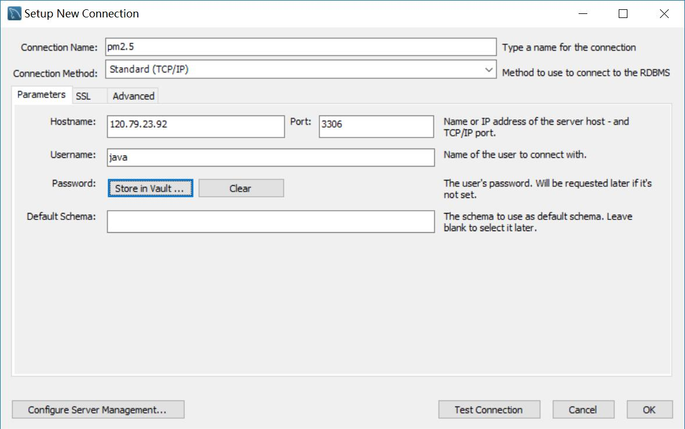
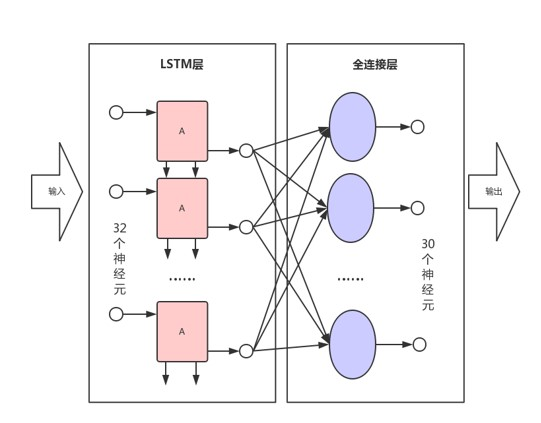

如果要完全理解本项目，至少需要掌握以下知识点
由于本系统开发所采用的技术都是跨平台的，因此代码无需改动即可在Windows与Linux系统上运行。线下开发使用Windows 10 系统，线上使用阿里云的Linux服务器
使用Arduino IDE 1.8.5作为Arduino的硬件开发环境
在阿里云上部署一台服务器，运行操作系统为CentOS 7.4，需要公网ip 部署MySQL5.7，Java 1.8，Tomcat 8.5，Python3.6等，需要保证线上的软件版本与线下开发使用的版本一致。
数据库结构，该数据库由两张表构成 两张表：
POI表记录了每个上传数据的传感器所在的地理位置，数据（data）表则将PM2.5等原始数据作为时间序列依此存储在关系型数据库中。
POI表
| 字段名 | 类型 | 备注 |
|---|---|---|
| poi_name | varchar(50) | 兴趣点名 |
| poi_no | char(4) | 兴趣点编号 |
| poi_lng | double | 兴趣点经度 |
| poi_lat | double | 兴趣点纬度 |
| poi_alt | double | 兴趣点高程 |
data表
| 字段名 | 类型 | 备注 |
|---|---|---|
| data_id | int(11) | 数据编号 |
| data_time | datetime | 数据时间 |
| poi_no | varchar(4) | 兴趣点编号 |
| pm25 | float | PM2.5 |
| pm10 | float | PM10 |
| temperature | float | 气温 |
| pressure | float | 气压 |
| humidity | float | 湿度 |
建表语句 POI表
CREATE TABLE `poi` (
`poi_name` varchar(50) DEFAULT NULL,
`poi_no` char(4) NOT NULL,
`poi_lng` double DEFAULT NULL,
`poi_lat` double DEFAULT NULL,
`poi_alt` int(11) DEFAULT NULL,
PRIMARY KEY (`poi_no`)
) ENGINE=InnoDB DEFAULT CHARSET=utf8
data表：
CREATE TABLE `data` (
`data_id` int(11) NOT NULL AUTO_INCREMENT,
`data_time` datetime DEFAULT NULL,
`poi_no` varchar(4) DEFAULT NULL,
`pm25` float DEFAULT NULL,
`pm10` float DEFAULT NULL,
`temperature` float DEFAULT NULL,
`pressure` float DEFAULT NULL,
`humidity` float DEFAULT NULL,
PRIMARY KEY (`data_id`)
) ENGINE=InnoDB DEFAULT CHARSET=utf8;
倒序显示data表中的结果
select * from data order by data_id desc;
返回每个点的最新数据
select a.data_id,a.data_time,a.poi_no,a.pm25,a.pm10,a.temperature,a.pressure,a.humidity,poi.poi_name,poi.poi_lng,poi.poi_lat,poi.poi_alt
from data a
right join (
select poi_no, max(data_time) max_time
from data
group by data.poi_no) b1
on a.poi_no=b1.poi_no and b1.max_time=a.data_time
left join poi
on poi.poi_no=b1.poi_no
;
返回编号为001的点最近两小时（120 min）的数据，每分钟求均值
select *
from(
select date_format(data_time,'%Y-%m-%d %H:%i:00') data_time1,truncate(avg(pm25),2) pm25,avg(pm10) pm10,avg(temperature) temperature,avg(pressure) pressure,avg(humidity) humidity
from data
where data.poi_no='001'
group by data_time1
order by data_time1 desc
limit 120) a
order by a.data_time1
;
create database air_pollution;
use air_pollution;
CREATE TABLE `poi` (
`poi_name` varchar(50) DEFAULT NULL,
`poi_no` char(4) NOT NULL,
`poi_lng` double DEFAULT NULL,
`poi_lat` double DEFAULT NULL,
`poi_alt` int(11) DEFAULT NULL,
PRIMARY KEY (`poi_no`)
) ENGINE=InnoDB DEFAULT CHARSET=utf8;
CREATE TABLE `data` (
`data_id` int(11) NOT NULL AUTO_INCREMENT,
`data_time` datetime DEFAULT NULL,
`poi_no` varchar(4) DEFAULT NULL,
`pm25` float DEFAULT NULL,
`pm10` float DEFAULT NULL,
`temperature` float DEFAULT NULL,
`pressure` float DEFAULT NULL,
`humidity` float DEFAULT NULL,
PRIMARY KEY (`data_id`)
) ENGINE=InnoDB DEFAULT CHARSET=utf8;
insert into poi value('地理科学学院', '001', 119.204516, 26.032325, 20);
insert into poi value('李二楼顶', '002', 119.204461, 26.037912, 20);
insert into poi value('桂一楼顶', '003', 119.201912, 26.038198, 20);
insert into poi value('桃十楼顶', '004', 119.20269, 26.041477, 20);
insert into poi value('李八楼顶', '005', 119.203355, 26.039878, 20);
insert into poi value('桂十一楼顶', '006', 119.202197, 26.035776, 20);
insert into poi value('西区田径场', '007', 119.200349, 26.032107, 20);
insert into poi value('知名楼', '008', 119.203817, 26.02999, 20);
insert into poi value('行政楼', '009', 119.209053, 26.030948, 20);
insert into poi value('立诚楼', '010', 119.204907, 26.027998, 20);
insert into poi value('体育馆', '011', 119.210273, 26.028299, 20);
insert into `data`(data_time,poi_no,pm25,pm10,temperature,pressure,humidity) values('2017-05-15 12:15:00.0','001',24.5,36.5,13.54,1013.12,60);
insert into `data`(data_time,poi_no,pm25,pm10,temperature,pressure,humidity) values('2017-05-15 12:15:00.0','002',24.5,36.5,13.54,1013.12,60);
insert into `data`(data_time,poi_no,pm25,pm10,temperature,pressure,humidity) values('2017-05-15 12:15:00.0','003',24.5,36.5,13.54,1013.12,60);
insert into `data`(data_time,poi_no,pm25,pm10,temperature,pressure,humidity) values('2017-05-15 12:15:00.0','004',24.5,36.5,13.54,1013.12,60);
insert into `data`(data_time,poi_no,pm25,pm10,temperature,pressure,humidity) values('2017-05-15 12:15:00.0','005',24.5,36.5,13.54,1013.12,60);
insert into `data`(data_time,poi_no,pm25,pm10,temperature,pressure,humidity) values('2017-05-15 12:15:00.0','006',24.5,36.5,13.54,1013.12,60);
insert into `data`(data_time,poi_no,pm25,pm10,temperature,pressure,humidity) values('2017-05-15 12:15:00.0','007',24.5,36.5,13.54,1013.12,60);
insert into `data`(data_time,poi_no,pm25,pm10,temperature,pressure,humidity) values('2017-05-15 12:15:00.0','008',24.5,36.5,13.54,1013.12,60);
insert into `data`(data_time,poi_no,pm25,pm10,temperature,pressure,humidity) values('2017-05-15 12:15:00.0','009',24.5,36.5,13.54,1013.12,60);
insert into `data`(data_time,poi_no,pm25,pm10,temperature,pressure,humidity) values('2017-05-15 12:15:00.0','010',24.5,36.5,13.54,1013.12,60);
insert into `data`(data_time,poi_no,pm25,pm10,temperature,pressure,humidity) values('2017-05-15 12:15:00.0','011',24.5,36.5,13.54,1013.12,60);
部署好服务器端的数据库后创建一个新用户，赋予其select与insert的权限，并开放给所有ip访问。 使用本地的MySQL Workbench测试数据库的连接，输入服务器ip，端口默认，用户名以及密码，点击Test Connection。  当出现下图所示界面时即表示数据库连接正常。
本系统后台主要由Java语言编写，因此需要船舰一个Database类，作为Java后台服务与数据库之间的中间层。需要使用mysql-connector-java-5.1.24-bin.jar包来完成数据库连接器，版本为5.1.24。
Database类如下：
package com;
import java.sql.*;
import java.text.DateFormat;
import java.text.SimpleDateFormat;
import java.util.logging.Level;
import java.util.logging.Logger;
public class Database {
//设置系统hosts使得mysql指向服务器ip：39.108.108.117
private String url="jdbc:mysql://mysql:3306/air_pollution";//数据库连接URL
private String username="java";//数据库连接用户名
private String psd="Underground123";//数据库连接密钥
public Database(){}
/**
* Set MySQL connection string.
* @param url Example:url="jdbc:mysql://mysql:3306/air_pollution"
* @param username MySQL user name
* @param psd Password
*/
public Database(String url,String username,String psd){
this.url=url;
this.username=username;
this.psd=psd;
}
/**
*
* @return Return true for false indicated if the connection succeeded.
*/
public boolean dbTestConnect()// throws ClassNotFoundException, SQLException
{
try // throws ClassNotFoundException, SQLException
{
Class.forName("com.mysql.jdbc.Driver");
Connection conn = DriverManager.getConnection(url, username, psd);
if(!conn.isClosed())
System.out.println("Succeeded connecting to the Database!");
conn.close();
return true;
} catch (ClassNotFoundException ex) {
Logger.getLogger(Database.class.getName()).log(Level.SEVERE, null, ex);
return false;
} catch (SQLException ex) {
Logger.getLogger(Database.class.getName()).log(Level.SEVERE, null, ex);
return false;
}
}
public String showDatabases()
{
String dat="";
try{
Class.forName("com.mysql.jdbc.Driver");
Connection conn = DriverManager.getConnection(url, username, psd);
Statement stmt=conn.createStatement();
String sql = "show tables;";
ResultSet rs = stmt.executeQuery(sql);
while(rs.next()){
dat+=rs.getString("Tables_in_air_pollution");
dat+='\n';
}
rs.close();
conn.close();
//stmt.execute("SET SQL_SAFE_UPDATES = 0");//允许使用update语句。调优可以删除
conn.close();
}catch(Exception e)
{
System.out.println(e);
}
return dat;
}
/**
* 对静止POI插入数据
* @param time 时间字符串，格式 2017-05-15 12:15:00.0
* @param poiNo poi点 格式 003
* @param pm25 PM2.5数值
* @param pm10 PM10数值
* @param temperature 气温
* @param pressure 气压
* @param humidity 湿度
*/
public void poiInsert(String time,String poiNo,String pm25,String pm10,String temperature,String pressure,String humidity){
try{
Class.forName("com.mysql.jdbc.Driver");
Connection conn = DriverManager.getConnection(url, username, psd);
Statement stmt=conn.createStatement();
String sql;
sql=String.format("insert into `data`(data_time,poi_no,pm25,pm10,temperature,pressure,humidity) values('%s','%s',%s,%s,%s,%s,%s);",time,poiNo,pm25,pm10,temperature,pressure,humidity);
stmt.execute(sql);
//stmt.execute("SET SQL_SAFE_UPDATES = 0");//允许使用update语句。调优可以删除
conn.close();
//System.out.println("insert suceeded!");
}catch(Exception e)
{
System.out.println(e);
}
}
/**
* 返回poi数据，格式为json
* @return
*/
public String dbSelectPOI()
{
String dat="";
try{
Class.forName("com.mysql.jdbc.Driver");
Connection conn = DriverManager.getConnection(url, username, psd);
Statement stmt=conn.createStatement();
String sql = "select * from poi;";
ResultSet rs = stmt.executeQuery(sql);
String name="";
String id="";
double lng;
double lat;
int alt;
while(rs.next()){
name = rs.getString("poi_name");
id = rs.getString("poi_no");
lng=rs.getDouble("poi_lng");
lat=rs.getDouble("poi_lat");
alt=rs.getInt("poi_alt");
dat+="{ \"type\": \"Feature\", \"properties\": { \"Id\": \""+id+"\", \"Name\": \""+name+"\" }, \"geometry\": { \"type\": \"Point\", \"coordinates\": [ "+lng+", "+lat+" ] } },";
//dat+=(name + "\t" + id+"\t" + lng+"\t" + lat+"\t" + alt);
//System.out.println(dat.substring(0, dat.length()-1));
}
rs.close();
conn.close();
//stmt.execute("SET SQL_SAFE_UPDATES = 0");//允许使用update语句。调优可以删除
conn.close();
}catch(Exception e)
{
System.out.println(e);
}
return dat.substring(0, dat.length()-1);
}
/**
* 返回几个点最新的数据，结果为GeoJson格式，前端可以直接解析
* @return
*/
public String dbSelectRecentData()
{
String dat="";
try{
Class.forName("com.mysql.jdbc.Driver");
Connection conn = DriverManager.getConnection(url, username, psd);
Statement stmt=conn.createStatement();
String sql = "select a.data_id,a.data_time,a.poi_no,a.pm25,a.pm10,a.temperature,a.pressure,a.humidity,poi.poi_name,poi.poi_lng,poi.poi_lat,poi.poi_alt " +
"from data a " +
"right join ( " +
"select poi_no, max(data_time) max_time " +
"from data " +
"group by data.poi_no) b1 " +
"on a.poi_no=b1.poi_no and b1.max_time=a.data_time " +
"left join poi " +
"on poi.poi_no=b1.poi_no" +
";";
ResultSet rs = stmt.executeQuery(sql);
String name="";
String id="";
double lng;
double lat;
String date="";
double pm25,pm10,pressure,temperature,humidity;
//int alt;
while(rs.next()){
name = rs.getString("poi_name");
id = rs.getString("poi_no");
lng=rs.getDouble("poi_lng");
lat=rs.getDouble("poi_lat");
//alt=rs.getInt("poi_alt");
date=rs.getString("data_time");
pm25=rs.getDouble("pm25");
pm10=rs.getDouble("pm10");
temperature=rs.getDouble("temperature");
pressure=rs.getDouble("pressure");
humidity=rs.getDouble("humidity");
dat+="{ \"type\": \"Feature\", \"properties\": { \"Id\": \""+id+"\", \"Name\": \""+name+"\",\""+"date\":\""+date+"\",\"pm25\":\""+pm25+"\",\"pm10\":\""+pm10+"\",\"temperature\":\""+temperature+"\",\"pressure\":\""+pressure+"\",\"humidity\":\""+humidity+"\" }, \"geometry\": { \"type\": \"Point\", \"coordinates\": [ "+lng+", "+lat+" ] } },";
//dat+=(name + "\t" + id+"\t" + lng+"\t" + lat+"\t" + alt);
//System.out.println(dat.substring(0, dat.length()-1));
}
rs.close();
conn.close();
//stmt.execute("SET SQL_SAFE_UPDATES = 0");//允许使用update语句。调优可以删除
conn.close();
}catch(Exception e)
{
System.out.println(e);
}
return dat.substring(0, dat.length()-1);
}
/**
*
* 查询某点的历史数据，结果以字符串形式返回
* @param point
* @return
*/
public String dbSelectHistoryData(String point)
{
String date="[";
String pm25="[";
String pm10="[";
String pressure="[";
String temperature="[";
String humidity="[";
DateFormat sdf2 = new SimpleDateFormat("YYYY/MM/d HH:mm");
try{
Class.forName("com.mysql.jdbc.Driver");
Connection conn = DriverManager.getConnection(url, username, psd);
Statement stmt=conn.createStatement();
String sql ="select * " +
"from( " +
"select date_format(data_time,'%Y-%m-%d %H:%i:00') data_time1,truncate(avg(pm25),2) pm25,truncate(avg(pm10),2) pm10,truncate(avg(temperature),2) temperature,truncate(avg(pressure),2) pressure,truncate(avg(humidity),2) humidity " +
"from data " +
"where data.poi_no='"+point+"'" +
"group by data_time1 " +
"order by data_time1 desc " +
"limit 480) a " +
"order by a.data_time1" +
";";
ResultSet rs = stmt.executeQuery(sql);
//int alt;
while(rs.next()){
//date+=rs.getTimestamp("data_time").toString();
date+="\""+sdf2.format(rs.getTimestamp("data_time1"))+"\""+',';
pm25+=rs.getString("pm25")+',';
pm10+=rs.getString("pm10")+',';
temperature+=rs.getString("temperature")+',';
pressure+=rs.getString("pressure")+',';
humidity+=rs.getString("humidity")+',';
//System.out.println(date+'\t'+value);
}
rs.close();
conn.close();
//stmt.execute("SET SQL_SAFE_UPDATES = 0");//允许使用update语句。调优可以删除
conn.close();
}catch(Exception e)
{
System.out.println(e);
}
return date.substring(0, date.length()-1)+"];"
+pm25.substring(0, pm25.length()-1)+"];"
+pm10.substring(0, pm10.length()-1)+"];"
+pressure.substring(0, pressure.length()-1)+"];"
+temperature.substring(0, temperature.length()-1)+"];"
+humidity.substring(0, humidity.length()-1)+"]";
}
/**
* 主函数，测试
* @param args
*/
public static void main(String[] args) {
Database db=new Database();
db.dbTestConnect();
System.out.println(db.dbSelectHistoryData("001"));
}
}
值得注意的是为了保证线下调试与线上运行的一致性，本项目的开发与部署均使用一台数据库服务器。因此需要在线上线下系统中添加一条映射，将服务器ip用某个字符串替代，像上述的“mysql”字符串。具体操作方法是修改操作系统的hosts文件，在末尾添加一条记录如下
120.79.195.89 mysql
这样就相当于给ip地址起了一个别名。Windows系统的hosts文件通常在C:\Windows\System32\drivers\etc 文件夹下。
本系统设计了3个Servlet接口，分别完成插入数据、查询所有点最近数据以及查询历史数据等功能。
InsertData.java 映射的url为 /insertdata。用于传感器调用插入数据，传入参数有poiNo、pm25、pm10、temperature、pressure、humidity。
RecentData.java 映射的url为 /recentdata。用于读取所有点最新数据，并向前端发送geojson字符串。
HistoryData.java 映射的url为 /historydata。查询某点的历史数据。
这三个Servlet类代码如下： InsertData.java
package Servlet;
import com.Database;
import javax.servlet.ServletException;
import javax.servlet.annotation.WebServlet;
import javax.servlet.http.HttpServlet;
import javax.servlet.http.HttpServletRequest;
import javax.servlet.http.HttpServletResponse;
import java.io.IOException;
import java.text.DateFormat;
import java.text.SimpleDateFormat;
import java.util.Date;
@WebServlet(name = "InsertData",urlPatterns = "/insertdata")
public class InsertData extends HttpServlet {
protected void doPost(HttpServletRequest request, HttpServletResponse response) throws ServletException, IOException {
}
/**
* request URL sample: http://host:port/path/insertdata?poiNo=001&pm25=21.5&pm10=35.7&temperature=12.43&pressure=1013.4&humidity=61.4
* @param request
* @param response
* @throws ServletException
* @throws IOException
*/
protected void doGet(HttpServletRequest request, HttpServletResponse response) throws ServletException, IOException {
String poiNo=request.getParameter("poiNo");
String pm25=request.getParameter("pm25");
String pm10=request.getParameter("pm10");
String temperature=request.getParameter("temperature");
String pressure=request.getParameter("pressure");
String humidity=request.getParameter("humidity");
DateFormat sdf2 = new SimpleDateFormat("yyyy-MM-dd HH:mm:ss");
Date date=new Date();
String time=sdf2.format(date);
Database db=new Database();
db.poiInsert(time,poiNo,pm25,pm10,temperature,pressure,humidity);
}
}
RecentData.java
package Servlet;
import com.Database;
import javax.servlet.ServletException;
import javax.servlet.annotation.WebServlet;
import javax.servlet.http.HttpServlet;
import javax.servlet.http.HttpServletRequest;
import javax.servlet.http.HttpServletResponse;
import java.io.IOException;
@WebServlet(name = "RecentData",urlPatterns = "/recentdata")
public class RecentData extends HttpServlet {
protected void doPost(HttpServletRequest request, HttpServletResponse response) throws ServletException, IOException {
}
protected void doGet(HttpServletRequest request, HttpServletResponse response) throws ServletException, IOException {
request.setCharacterEncoding("UTF-8");
response.setContentType("text/json;charset=utf-8");
response.setCharacterEncoding("UTF-8");
String aaa="{\"type\": \"FeatureCollection\",\"crs\": { \"type\": \"name\", \"properties\": { \"name\": \"urn:ogc:def:crs:OGC:1.3:CRS84\" } },\"features\": [";
try{
Database db=new Database();
aaa+=db.dbSelectRecentData();
}catch(Exception e){
System.out.println(e);
response.getWriter().append("<h1>error</h1>");
}
response.getWriter().append(aaa+"]}");
}
}
HistoryData.java
package Servlet;
import com.Database;
import javax.servlet.ServletException;
import javax.servlet.annotation.WebServlet;
import javax.servlet.http.HttpServlet;
import javax.servlet.http.HttpServletRequest;
import javax.servlet.http.HttpServletResponse;
import java.io.IOException;
@WebServlet(name = "HistoryData", urlPatterns = "/historydata")
public class HistoryData extends HttpServlet {
protected void doPost(HttpServletRequest request, HttpServletResponse response) throws ServletException, IOException {
}
protected void doGet(HttpServletRequest request, HttpServletResponse response) throws ServletException, IOException {
String point=request.getParameter("poi");
String ret="";
try{
Database db=new Database();
ret=db.dbSelectHistoryData(point);
}catch(Exception e){
response.getWriter().append("error");
}
response.getWriter().append(ret);
}
}
前端网页采用Javascript作为主要的脚本语言，使用JQuery、Bootstrap、Leaflet、Echarts等开源框架。 前端网页是展示整套PM2.5实时检测系统最终成果的用户界面，需要简洁明了地将数据库中的各种数据显示在页面上。同时该页面需要响应用户的操作，支持用户自定义查询所需要的数据。因此该网页主要划分为4个模块：地图底图模块、栅格数据模块、历史数据查询模块和数据预测模块。
前端页面代码见PM2.5\web\index.html。
本项目传感器采用Arduino作为主要开发平台，Arduino是一款开源硬件平台，通过运用简单的电路知识便可以搭建任何想要的原型。这一部分需要学习电路基础知识以及单片机开发相关知识，推荐先去论坛做相关学习了解基础知识。 部分推荐网站：
参考论文3.2节有对此部分的详细介绍。
本项目通过使用Keras构建一个LSTM预测模型，滑动预测未来半小时内的PM2.5。这个神经网络的结构为32个输入神经元，30个全连接输出层。输出未来30分钟内的PM2.5数值。 下图为神经网络的结构 
import pandas as pd
import numpy as np
from keras.models import Sequential
from keras.layers.core import Dense,Activation
from keras.layers.recurrent import LSTM
from keras.layers import CuDNNLSTM
from keras.optimizers import SGD
from keras.layers.advanced_activations import LeakyReLU
from keras.optimizers import Adam
from sklearn import preprocessing
import matplotlib.pyplot as plt
data=pd.read_csv(r"data4.csv",index_col='no')
internal=100
scalerx = preprocessing.MinMaxScaler().fit(data.iloc[:,1:])
data1=scalerx.transform(data.iloc[:,1:])
x=[]
y_former=[]
y=[]
for i in range(data1.shape[0]-internal-31):
x.append(np.array(data1[i:i+internal]))
y.append(np.array(data.iloc[i+internal+1:i+internal+31,1]))
x=np.array(x)
#y_former=np.array(y_former).reshape((-1,1))
y=np.array(y).reshape((-1,30))
# 归一化y
scalery = preprocessing.MinMaxScaler().fit(y)
y=scalery.transform(y)
#y_former=scalery.transform(y_former)
x_train,y_train=x[:15000],y[:15000]
x_test,y_test=x[15000:],y[15000:]
print(x.shape)
y.shape
model = Sequential()
model.add(CuDNNLSTM(32,input_shape=(x_train.shape[1], x_train.shape[2])))#, init='uniform'
model.add(Dense(30))
model.add(Activation('sigmoid'))
adam = Adam(lr=0.01)
model.compile(loss='mean_squared_error', optimizer=adam, metrics=["accuracy"])
hist = model.fit(x_train, y_train, batch_size=5, epochs=10, shuffle=True,verbose=1,validation_split=0.2)
y_predict = model.predict(x_test, batch_size=1, verbose=1)
y_predict = scalery.inverse_transform(y_predict)
y_test_yuan = scalery.inverse_transform(y_test)
y_train_predict = model.predict(x_train, batch_size=1, verbose=1)
y_train_predict = scalery.inverse_transform(y_train_predict)
y_train_yuan = scalery.inverse_transform(y_train)
print(y_predict.shape)
print(y_test_yuan.shape)
print(y_train_yuan.shape)
print(y_train_predict.shape)
y_predict.reshape((-1,))
print(np.sqrt(sum((y_predict.reshape((-1,))-y_test_yuan.reshape((-1,)))**2)/len(y_predict.reshape((-1,)))))
print(np.sqrt(sum((y_train_yuan.reshape((-1,))-y_train_predict.reshape((-1,)))**2)/len(y_train_yuan.reshape((-1,)))))
数据库无法远程登陆。
检查数据库用户的登录权限，应将数据库用户登录的ip设为所有ip
Tomcat服务器无法启动。
检查JDK是否配置成功
传感器无法上传数据。
http://www.runoob.com/servlet/servlet-tutorial.html
JavaScript http://www.w3school.com.cn/js/ https://leafletjs.com/examples.html
Arduino https://www.arduino.cn/ http://www.geek-workshop.com/portal.php?mod=list&catid=1 https://www.zhihu.com/people/panft/posts